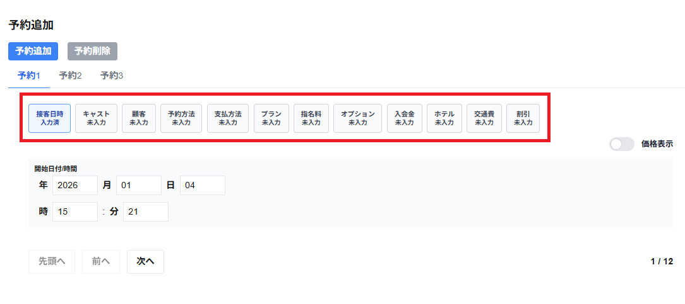

各予約のタブには以下の項目を選択・入力することできます。
未入力の選択のタブは灰色で表示され、項目名の下側に未入力と表示されます。
入力済みの選択のタブは緑色で表示され、項目名の下側に入力済と表示されます。
現在、選択している選択のタブは青に表示されます。
・接客日時
開始日付/時刻を入力することができます。
※接客日時は予約追加への必須項目です。入力せずに予約追加をすることはできません。
・キャスト
キャストを選択することができます。
キャストは予約追加への必須項目です。キャスト・仮キャストの選択をせずに予約追加をすることはできません。
・顧客
顧客を選択・追加することができます。
顧客は予約追加への必須項目です。顧客を選択・入力せずに予約追加をすることはできません。
・予約方法
予約方法を選択することができます。
予約方法は予約追加への必須項目です。予約方法を選択せずに予約追加をすることはできません。
・支払方法
支払方法を選択することができます。
支払方法は予約追加への必須項目です。支払方法を選択せずに予約追加をすることはできません。
※店舗情報で支払方法を未使用にしている場合は、支払方法の項目は表示されません。
・プラン
プランを選択・入力することができます。
プランは予約追加への必須項目です。プランを選択せずに予約追加をすることはできません。
・指名料
指名料を選択することができます。
オプションを選択することができます。
・入会金
入会金を選択することができます。
※店舗情報で入会金を未使用にしている場合は、入会金の項目は表示されません。
・ホテル
ホテルを選択・入力することができます。
※店舗情報でホテルを未使用にしている場合は、ホテルの項目は表示されません。
・交通費
交通費を選択・入力することがができます。
※店舗情報で交通費を未使用にしている場合は、交通費の項目は表示されません。
・割引
割引を選択することができます。
